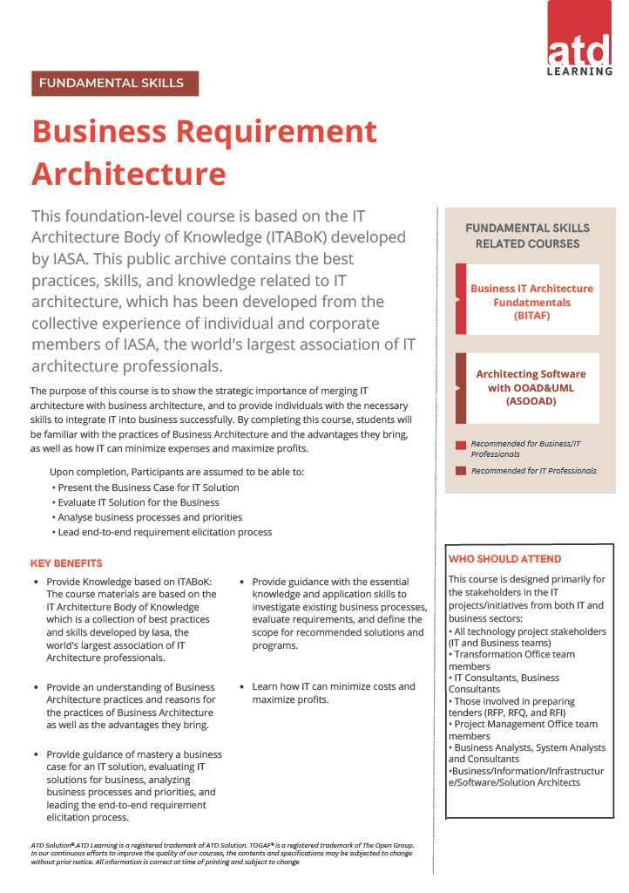
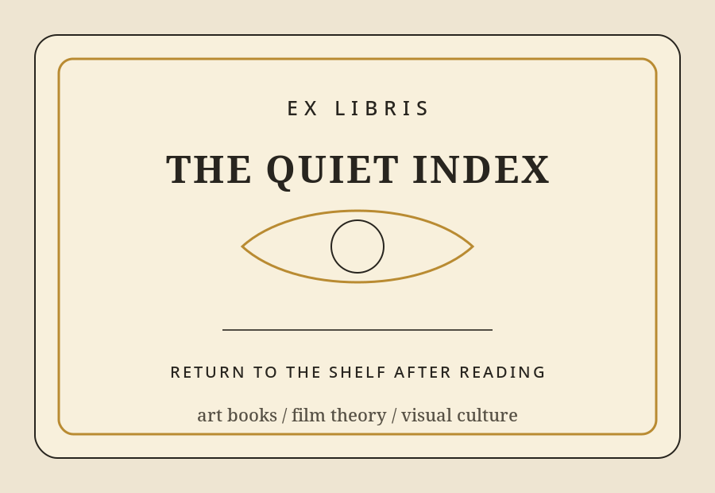
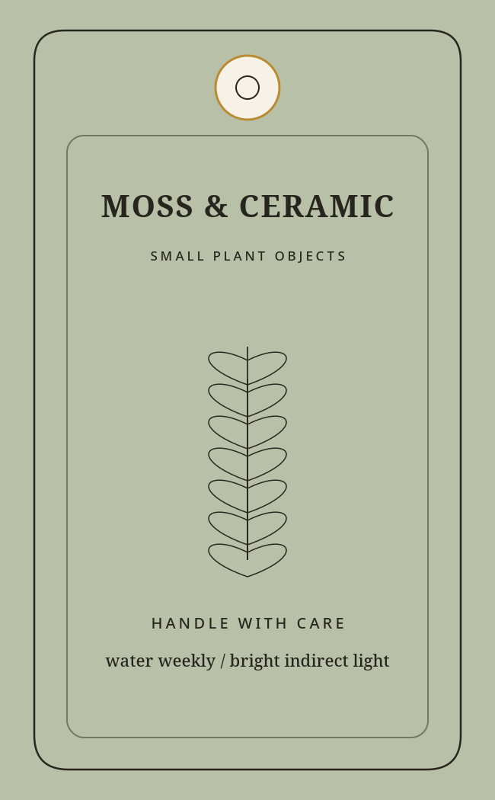
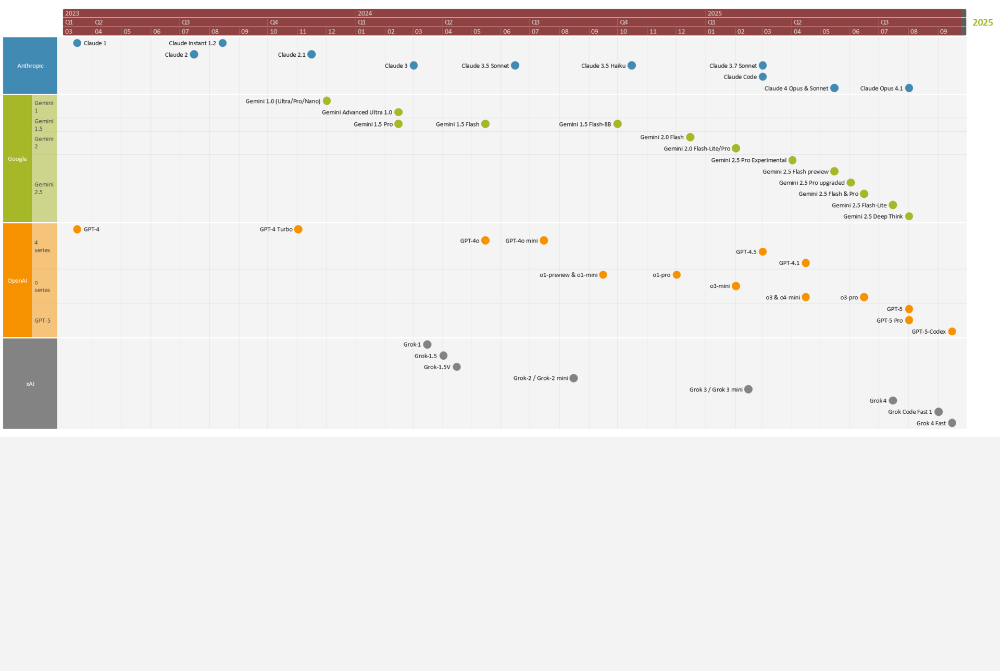

Event visual
Auckland-based · Media · Visual Communication
Selected work in visual design, video editing, subtitling, digital presentation, and web-based media projects.
University of Auckland-Master of Media and Screen Study University of Malaya-Bachelor of Media and Communication Studies
Completed a professional internship at ATD Solution, an IT company specializing in Digital Enterprise Architecture, as a Creative Designer/Producer. Gained hands-on experience in the media industry through video and audio editing, graphic design, and data organization..
Tools: Adobe Premiere Pro/Audition/Photoshop/InDesign, Canva, Topaz Photo/Video AI, Aegisub/SubtitleEdit, and MS Office.
Compact selection of visual, layout, and web-based works.
Event visual

Course layout

Corporate banner

Editorial identity

Packaging label

Embedded Google Drive videos. Sharing permission should be set to “Anyone with the link can view”.
A live GitHub Pages project is embedded below, with an external link as fallback.
For recruitment or project enquiries, contact me through either email address or phone.